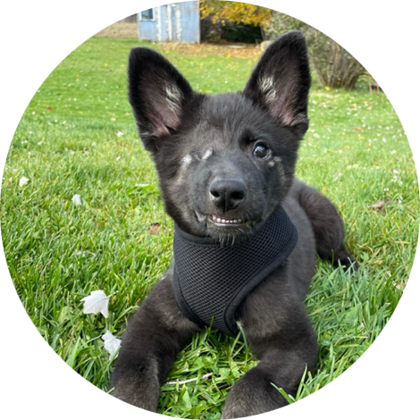
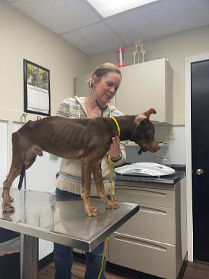
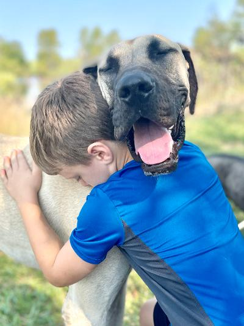

Haven
Haven had a rough start to life but it immediately improved when A Dozen Roses Animal Rescue pulled her from a bad situation. I work at a busy veterinary clinic and remember the day they walked through the door with this sad looking 7 week old puppy. It was clear from looking at her that she was going to lose her eye. It’s unclear how it happened but she sustained trauma or severe infection to the point that her eye had ruptured and it couldn’t be saved. Surgery was a success and although her eye was gone, she would be a lot less painful.
Unfortunately, it was also discovered that Haven had a severe heart murmur. A murmur that is almost as bad as it gets. She was given a very short life expectancy. Days, weeks, maybe a few months if she was lucky. She wasn’t adoptable and she was going to break someone’s heart in a short amount of time and I decided it may as well be mine. Haven joined my family that day and she has made it to 7 months old. She has defied all odds so far.
She recently had a cardiac work up done, which involved an ultrasound to see exactly where the problem with her heart lies. Haven has something called severe Pulmonic Stenosis. Pulmonic Stenosis is a congenital heart defect of the semilunar valve that is between the right ventricle of the heart and the pulmonary artery (the vessel that takes blood to the lungs). The leaflets of this valve are thickened and/or partially fused together and restricting blood flow. Because of this, Haven shows signs of exercise intolerance and will occasionally faint when she exerts herself.
As bad as this all sounds, I was over the moon to find out that there is hope for Haven. PS is operable and her quality and quantity of life can be greatly improved with a procedure called a Balloon Valvuloplasty. This procedure would need to be done at The Atlantic Veterinary College in Prince Edward Island, Canada and it would be a 3 day long event from start to finish. This life saving surgery is going to cost roughly $7,000-$10,000.
A Dozen Roses Animal Rescue and I are asking for your help to get Haven this life saving surgery. We can’t do this alone. Asking for help is usually out of the question for me but this is beyond my capabilities. Please help me save Haven. She is so strong and so smart. Anyone who meets her instantly loves her. Haven has made my life better for being in it and I would give anything to see her live the long and healthy life she deserves. Haven is the dog I never knew I truly needed until she was here and I can’t imagine a life without her.
Thank you from the bottom of my heart for reading.
Eryn · with A Dozen Roses Animal Rescue
Cupcake
To whom it may concern, I am asking for financial assistance for a hardship that my family and I have endured. We had a family member pass away in June. Due to this there was no one to care and love Cupcake. My sister drove to go pickup Cupcake and bring her home to me. We knew that Cupcake had previously been diagnosed and had been treated for kidney stones. We had a special brand of food to continue to treat her for the kidney stones. At this time, we did not realize that there was a possibility for her to have kidney stones.
On November 11, Cupcake did not seem herself, I contacted Eudora Animal hospital here in the town that I live in to see how much it would cost. They recommended that I sign up for care credit and they would see her. So I took her to the vet, to have her checked out. They ran x-rays and took blood and per the x-rays it indicated that she had a kidney stone blockage which was preventing her from urinating. The doctor indicated that she had four other stones as well and said that she would probably not survive a surgery and that the surgery could run up to $8000 which at this time I did not have. He also indicated with her age that she might not survive the surgery as well, since there were kidney damage due to the kidney stones.
I brought her home, so that my family could say goodbye and we took her to Mission veterinary emergency in Mission Kansas to put her down. I have included with this email a picture of Cupcake's bill. I am asking you for financial assistance with this bill to help pay for Cupcake's doctor appointments and putting her down. Any assistance that you can offer is much appreciated by me and my family.
Thank you for your time and consideration.
Carla, May and Family

Second Chance Animal Refuge Society
We are a licensed no kill shelter in rural Kansas, (S.C.A.R.S.) and can never thank the National Humane Society enough for their continued generosity. Over the years, their financial support has allowed us to literally save hundreds of dogs who were abandoned, abused or severely starved.
Last month we rescued five dogs who were living under the Sardou Bridge in Topeka, Ks. It is a rough area of town, and dogs roam the banks in search of food. We were able to catch five and they have been here for a month. Two are larger brown pit bull mixes and have gained 20 lbs each. Two are smaller and have gained 10 lbs each. The last was a 3 month of fawn brindle female pittie who was riddled with a variety of worms. It took several weeks of parasite treatment from our vet to bring these under control but Baby is gaining weight and now happy and healthy.
These are a small sampling of the dogs who will receive full medical care due to the support by the National Humane Society....our heroes.
Maureen Cummins · Second Chance Animal Refuge Society (S.C.A.R.S.)

Hank
Saturday morn rolled around, we were all busy as bees, when the car pulled up the driveway and the couple got out, holding a stuffed bag full of towels to donate. I immediately recognized them as people who had volunteered a few years back.
They came through the gate and we began chatting as the husband reached down petting every dog. He happened to glance up and I noticed something held his attention and I looked over to where he was staring. "Is that a Great Dane" he asked me looking at Hank who was in the big kennel having his breakfast.
My mind went back to the day two years ago when my phone rang. "There is a purebred Great Dane being starved and beaten and owner is willing to surrender if I can find a place for a giant breed." How could I say no? I told her to bring him over and I would figure it out.
That was the beginning of months of pure hard labor on my part, and he hung in there with me. His skeletal body broke my heart and his backbone stuck out and every rib was visible. This was not going to be an overnight fix.
And so I began fixing what had been broken. Each day I fed him several times, made him stay quiet for an hour and then let him exercise in varying amounts. And each day he became stronger. His ribs disappeared, his face was no longer skeletal, and he made more and more laps around the pond every day.
Slowly I began to see the dog he was meant to be. He was a light champagne faun color with black around his face. His legs were incredibly long and people commented on how regal he was.
I loved him. He followed me everywhere and so we went to the pond every day and he frolicked in the pasture. Could I ever part with this wonderful dog?
I answered Tim. Actually he is a purebred Dane and only a year and a half old. He is just so very tall!
Tim and his wife spent time with Hank in between putting up a new flag, washing out the kennels and doing so many jobs demanding attention.
And then the question I had dreaded...is he up for adoption. Was he? Could I let him go since he sleeps next to our bed and we had traveled a long road together. But then I knew he needed his very own home where he could live out his years. Hank would have a Great Dane sister and children to love him..his dream come true.
I put a collar on him, got his records, helped load him up and kissed his face. He was leaving me which I never thought I would do. But Terry is gone and I am flying solo. I simply cannot keep them all and this is such a young dog, he deserves his own place.
And once again, I watched as the car turned in our driveway, Hank looked at me confused, and I bravely waved at him and blew a kiss. "I love you" I called out. Let me know if you are not happy and I will there in a heartbeat.
And so once again, the car drove away holding a beloved friend of mine. So that was it. I loved him. It snuck up on me as the months flew by and meanwhile the universe was making plans of its own.
So, I let him go. He was headed out to meet his new family and thus begin a new chapter of his life.
Oh Hank...may your days be filled with love and joy. May you never know hunger, or the feel of an angry hand, again. May you smell the flowers in the pasture in the spring, and sniff the new fallen snow in winter. And run with the wind now that you are strong.
The world is yours......
Second Chance Animal Refuge Society